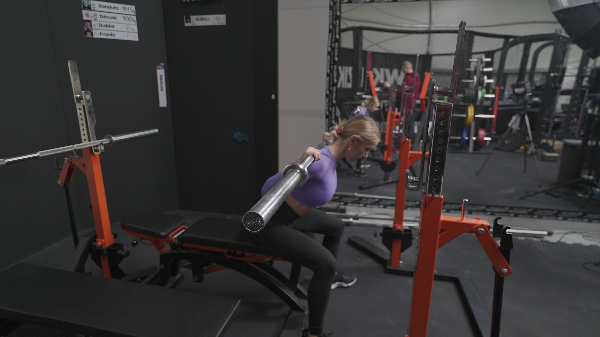
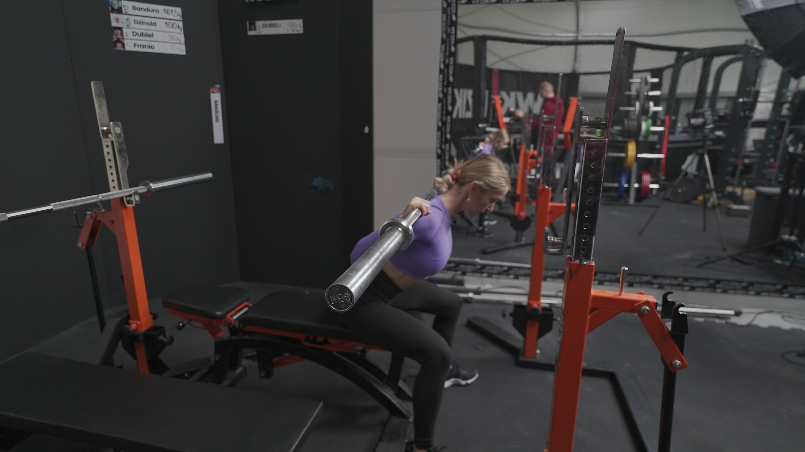

BOX SQUAT
 

1. Stojaki ustaw na takiej wysokości, abyś swobodnie mogła wejść pod sztangą i ułożyć ją na górnej części swoich pleców.
2. Za sobą ustaw ławeczkę lub skrzynię. Wysokość dopasuj do swojego wzrostu i mobilności.
3. Złap sztangę nieco szerzej niż szerokość Twoich barków.
4. Zepnij brzuch oraz pośladki. Wynieś sztangę ze stojaków robiąc 2 drobne kroki w tył.
5. Stań szerzej niż szerokość swoich bioder. Palce skieruj przed siebie lub delikatnie na zewnątrz.
6. Obniż pozycję łopatek, wykonując ruch, jakbyś chciała “złamać sztangę”.
7. Głowa powinna stanowić przedłużenie tułowia.
8. Rozpocznij ruch schodzenia do ławeczki/skrzyni, wypychając biodra mocno w tył. Kolana skieruj na zewnątrz.
9. Gdy pośladki dotkną punktu podparcia, nie trać napięcia, nie siadaj na ławeczce tylko od razu wykonaj ruch wstawania ze sztangą.
10. Możesz dopiąć pośladki w górnej fazie, pamiętaj jednak, aby nie robić przeprostu.